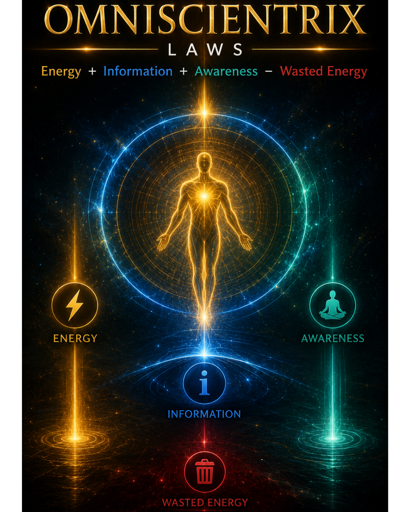

Research
Omniscientrix
Omniscientrix is an exploratory conceptual framework. Its proposed “laws” and theories should not be interpreted as established scientific laws or verified discoveries.
Important: Independent professional verification is required. This site distinguishes proposed frameworks, hypotheses and speculative laws from established scientific findings.

Specialist site
Explore the existing Omniscientrix laws site with this verification context in mind.
Visit specialist site ↗Preferred terminology
Proposed frameworks · hypotheses · conceptual models · speculative laws · exploratory theories · conceptual research.